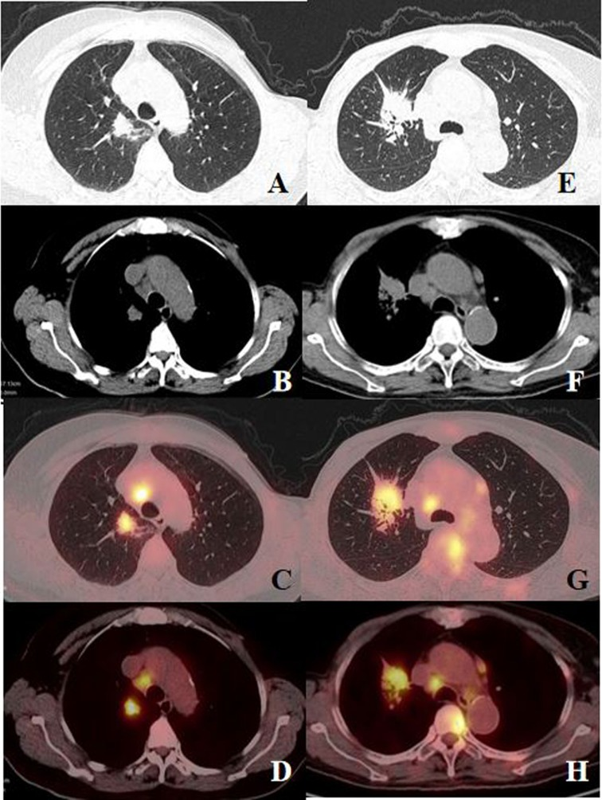
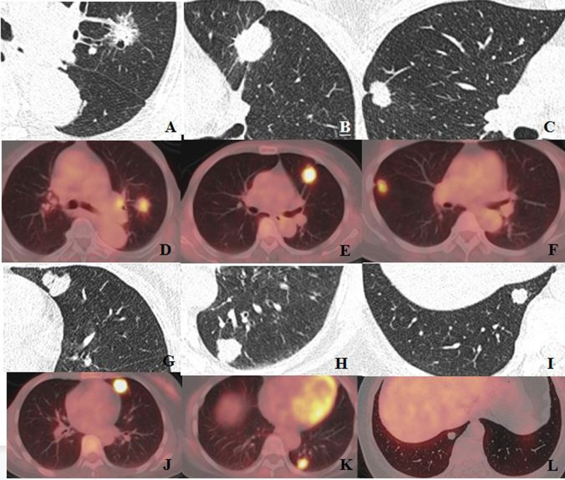
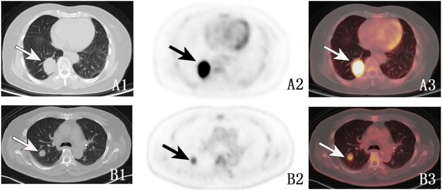
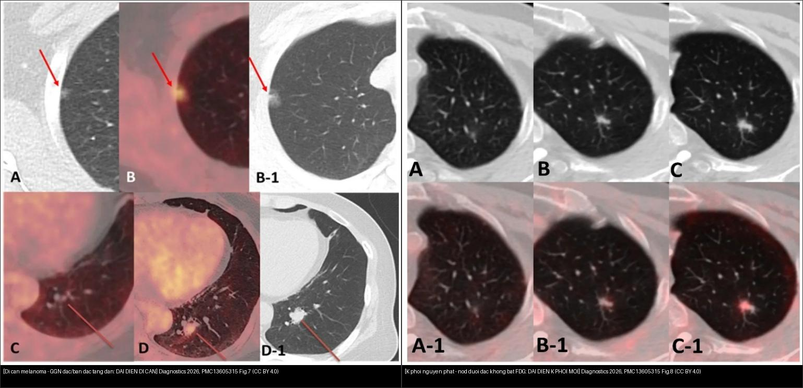
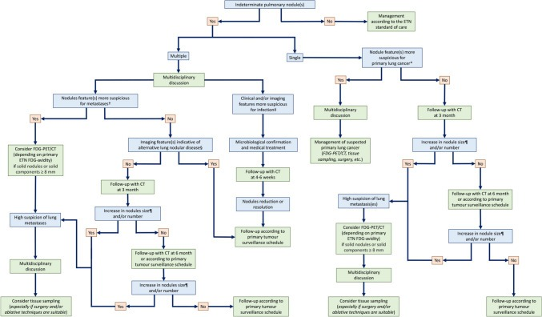
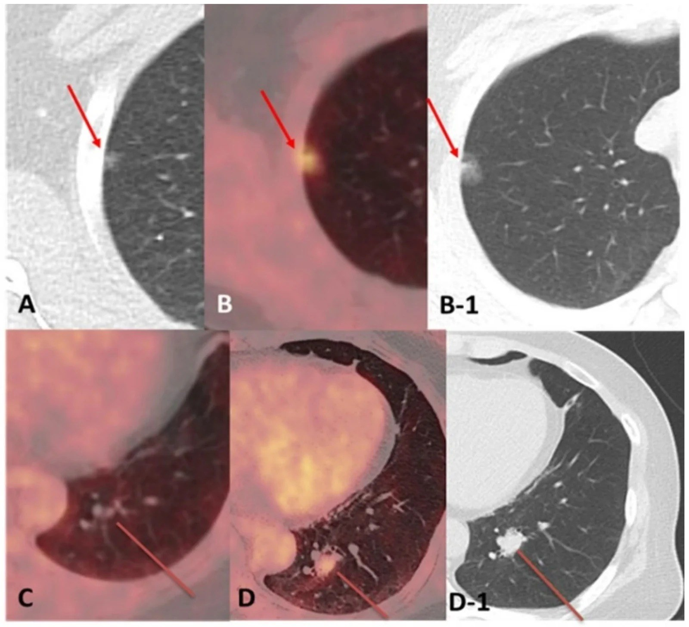
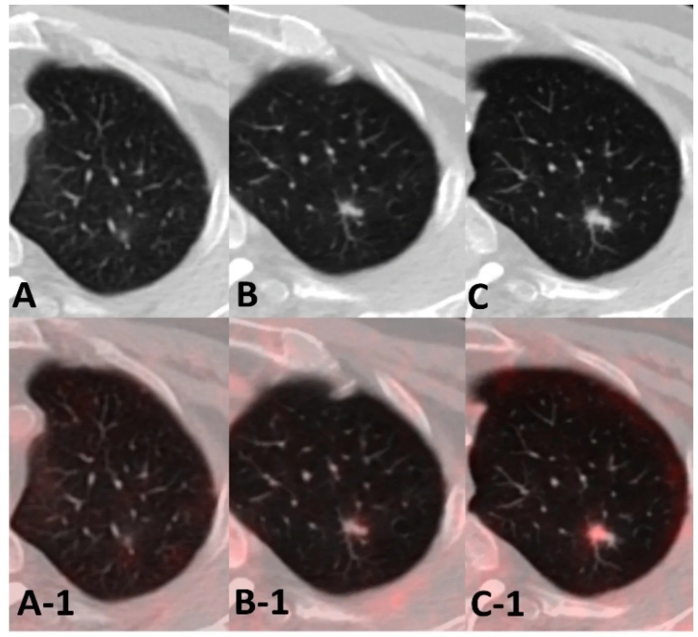
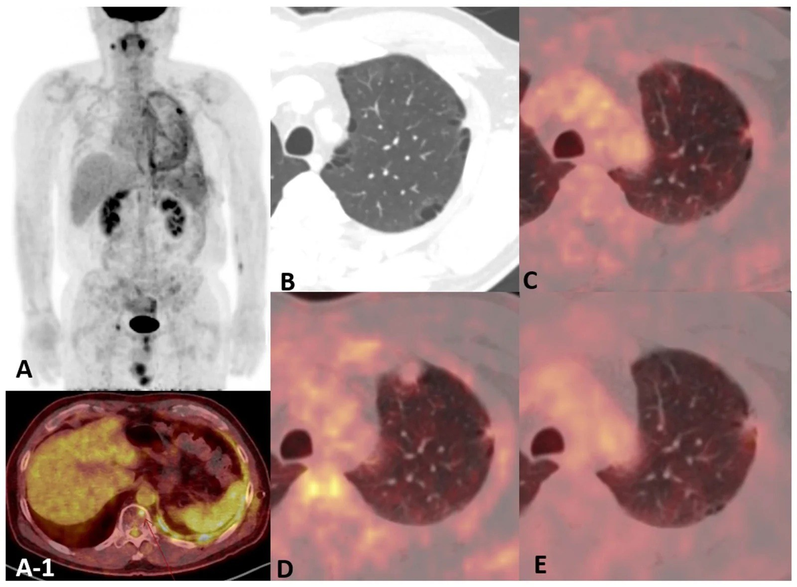

016 — Nốt phổi đơn độc ở bệnh nhân CÓ tiền sử ung thư ngoài phổi: di căn đơn độc vs K phổi nguyên phát thứ hai / Solitary pulmonary nodule in patients with extrapulmonary malignancy
Tags: pattern:not pattern:not-co-tien-su-ung-thu vung:phoi score:Lung-RADS protocol:PET-CT-nguc incidentaloma:not-tien-su-ung-thu
Mức chắc chắn (certainty): tổng hợp y văn (literature synthesis) — nhóm tự biên từ y văn mở (ca nguyên văn Lee Diagnostics 2026 CC BY; Xue BMC Pulm Med 2024 CC BY-NC-ND; Liu Ann Nucl Med 2025 CC BY; Cicchetti Radiol Med 2025 CC BY).
1. Tổng quan bệnh học – cơ chế hình ảnh (TẠI SAO bối cảnh thay đổi mọi thứ)
- Vấn đề lâm sàng: một nốt phổi đơn độc (solitary pulmonary nodule — SPN) mới xuất hiện ở người đã có ung thư ngoài phổi (extra-thoracic neoplasm — ETN) là bối cảnh khác hẳn nốt tình cờ ở người khỏe: xác suất ác trước chụp (pre-test probability) đã cao sẵn, nên CT hình thái và FDG đều không thể một mình chốt lành/ác (Lee 2026).
- Hai đáp án cạnh tranh quyết định điều trị hoàn toàn ngược nhau:
- Di căn đơn độc (solitary pulmonary metastasis — PM): phẫu thuật ít vai trò, điều trị toàn thân (bậc M1 = giai đoạn IV nếu là cùng nguồn).
- Ung thư phổi nguyên phát thứ hai / đồng thì (second primary lung cancer — SPLC, metachronous/synchronous): điều trị triệt căn — mổ (nếu còn mổ được), điều trị như NSCLC giai đoạn theo TNM.
- → Chốt sai hướng = bỏ mất cơ hội mổ (coi SPLC là di căn) hoặc mổ oan (coi di căn là nguyên phát).
- TẠI SAO PET/CT có thể "dương tính giả" và "âm tính giả" cùng lúc (cơ chế vật lý + sinh học):
- FDG phản ánh chuyển hóa glucose (GLUT1 + hexokinase), không phản ánh "ác/lành" trực tiếp → ổ viêm/nhiễm trùng (đại thực bào, bạch cầu) bắt FDG rất mạnh → dương tính giả (Lee 2026: nốt giả viêm được theo dõi rồi xác nhận ác; di căn cholangiocarcinoma đồng tồn tại với nhiễm mycobacteria không lao NTM).
- Ngược lại, tổn thương nhỏ, hiệu ứng thể tích một phần (partial-volume), di động hô hấp, mật độ tế bào thấp → di căn "ẩn" trên PET (metabolically occult) dù thấy rõ trên CT (Lee 2026). Di căn tuyến giáp biệt hóa còn có thể bắt iod mà KHÔNG bắt FDG (Lee 2026, dấu thyroglobulin tăng).
- Số liệu định lượng nằm lòng:
- Mô hình FDG PET/CT + đặc điểm lâm sàng (120 BN ung thư vú có SPN mới, Xue 2024): CEA (p = 0,005) và CA15-3 (p = 0,001) khác biệt giữa K phổi nguyên phát (PLC) và di căn ung thư vú (BCM); các yếu tố dự báo hình ảnh gồm SUVmax của SPN, dấu múi (lobulation), dấu co kéo màng phổi (pleural indentation).
- Phản trực giác: BCM có thể SUVmax CAO hơn PLC (ví dụ trong bài: BCM SUVmax 6,47 — TLG 6,48, MTV 3,33; hạch rốn SUVmax 7,72, so với PLC SUVmax 2,98 — TLG 34,3, MTV 4,65) → SUVmax một mình không phân biệt được.
- Mô hình gộp đa thông số (84 BN, nốt đơn độc + ETN, Liu 2025): kết hợp SUVpeak + TLG + energy + múi + gai cho Se 76,2% – Sp 83,8% – AUC 0,826 (IDI 0,176); thông số energy đơn độc mạnh nhất (1.039.358,1 vs 92.011,0, p = 0,001).
- Thời gian nhân đôi thể tích (VDT) của u ác điển hình 20–400 ngày — vẫn là công cụ theo dõi kinh điển khi PET mơ hồ.
- Hình thái trên CT lát mỏng (Xue 2024, Fig. 4): kính mờ hỗn hợp (mixed GGN — mGGN), gai (spiculation), co kéo màng phổi (pleural indentation), múi (lobulation) → gặp nhiều ở PLC; di căn ung thư vú (BCM) thường tròn và đặc, ít dấu hình thái.

(A–D) Bệnh nhân 63 tuổi di căn ung thư vú: nốt phổi đơn độc SUVmax 6,47 (TLG 6,48; MTV 3,33), hạch rốn SUVmax 7,72. (E–H) Bệnh nhân 67 tuổi K phổi nguyên phát: nốt SUVmax 2,98 nhưng TLG 34,3 (khối tích lớn). Nguồn: Xue Y et al., BMC Pulm Med 2024, PMC11607836 Fig. 2, CC BY-NC-ND 4.0 (giữ nguyên bản).
(A–F) PLC: mGGN (A), dấu gai (B, C), co kéo màng phổi (B, C), múi (C). (G–L) BCM: nốt tròn, đặc, ít dấu hình thái. Nguồn: Xue Y et al., BMC Pulm Med 2024, PMC11607836 Fig. 4, CC BY-NC-ND 4.0 (giữ nguyên bản).2. Mẫu hình + chẩn đoán phân biệt theo cơ chế lan (Gamut)
- Con đường lan của ung thư ngoài phổi tới phổi (Cicchetti 2025):
- Di căn đường máu (hematogenous) — hay gặp nhất: nhiều nốt tròn, phân bố ngẫu nhiên (random), ưu thế đáy; có thể đơn độc (một nốt) → đây chính là bài toán 016.
- Lan bạch mạch (lymphangitic carcinomatosis) — xem 017.
- Di căn nội phế quản (endobronchial) — hiếm, gây xẹp phổi.
- Di căn qua màng phổi/đường thở — gieo màng phổi, di căn trong lòng phế nang.
- Gamut theo bối cảnh "nốt mới ở người đã có K ngoài phổi" — gợi nhớ MISS:
- M — Metastasis (di căn đơn độc; phân bố ngẫu nhiên, tròn, ± mGGN/bán đặc/hang "giả nhiễm trùng").
- I — Infection (lao, NTM, nấm — bắt FDG mạnh, có thể đồng tồn tại với di căn thật).
- S — Second primary lung cancer (SPLC/đồng thì/dị thì; dấu gai + co kéo + mGGN).
- S — Sarcoid-like reaction / thuốc (viêm phổi tổ chức do thuốc — organizing pneumonia, phản ứng giống sarcoid khi dùng immunotherapy — tự thoái triển khi ngừng thuốc).
- Gamut theo hình thái nốt bất thường: nốt hang/bán đặc ở người ung thư không mặc định là nhiễm trùng — di căn cũng có thể dạng hang/bán đặc (Lee 2026); nốt "giả viêm" có thể là ác; nốt kính mờ (GGN) có thể là di căn không điển hình (melanoma) hoặc adenocarcinoma nguyên phát.

*Bệnh nhân nữ 71 tuổi, 96 tháng sau cắt ung thư cổ tử cung: khối đơn độc thùy dưới phổi phải 30 × 39 mm (A1) với tăng chuyển hóa glucose rõ (A2, A3). Ở nốt đơn độc có ung thư ngoài phổi, bài toán luôn là SPLC (mổ) vs PM (toàn thân). Nguồn: Liu H et al., Ann Nucl Med 2025, PMC12095392 Fig. 1, CC BY 4.0.*3. Bảng so sánh phân biệt (ma trận đối chiếu)
| Thực thể (entity) | Hình ảnh điển hình (PET/CT + CT lát mỏng) | Chốt vào (rule-in) | Chốt loại (rule-out) | Gợi ý xác nhận |
|---|---|---|---|---|
| Di căn đơn độc (SM) | Nốt tròn, đặc, bờ tương đối đều, phân bố ngẫu nhiên; có thể bán đặc/hang; FDG ± (có thể ẩn nếu nhỏ) | Hình thái "hiền" + ổn định trên phim cũ + bối cảnh K lan rộng | Gai + co kéo màng phổi + mGGN tăng dần → nghi nguyên phát | So phim cũ (interval evolution); sinh thiết nếu đổi xử trí; VDT |
| K phổi nguyên phát thứ hai (SPLC) | Nốt bờ gai, dấu múi, co kéo màng phổi, mGGN; ưu thế thùy trên | Gai + múi + co kéo + phân thùy mới, không khớp di căn cũ | Tròn đều + bối cảnh di căn lan tỏa → nghĩ di căn | Mô bệnh (mô học khác nguồn/khác dòng tế bào); PET/CT giai đoạn |
| Di căn GGN/bán đặc không điển hình | GGN mới, to lên chậm; FDG thường ÂM (bẫy âm tính giả) | Tiền sử K (melanoma...) + GGN mới to lên | "GGN = lành" là sai; không được tự động gọi lành | Mô bệnh (di căn melanoma/adeno); theo dõi 1 năm |
| Nhiễm trùng giả u (lao/NTM/nấm) | Nốt/đám bắt FDG mạnh, ± hang, ± tree-in-bud; có thể đồng tồn tại với di căn | FDG dương mạnh + hình thái viêm + bối cảnh miễn dịch | Không loại được ác chỉ vì "bắt FDG mạnh" | AFB/PCR, cấy nấm; sinh thiết cả ổ vẫn cần khi đổi xử trí |
| Viêm phổi tổ chức do thuốc / giống sarcoid | Đám mờ đa ổ ngoại vi (OP), hạch trung thất, nốt dưới màng phổi; tự tan khi ngừng thuốc | Bối cảnh vừa bắt đầu immunotherapy/liệu pháp; thoái triển theo thời gian | Tồn tại/to lên dù ngừng thuốc → nghi ác | Theo dõi chuỗi; HRCT; sinh thiết khi nghi ngờ |

Trái: di căn melanoma — nốt kính mờ đặc/bán đặc thùy trên (CT + PET/CT), to lên rồi được mổ, mô bệnh = di căn. Phải: K phổi nguyên phát — nốt dưới đặc, KHÔNG bắt FDG, sau 2 năm xuất hiện nhân đặc + bờ gai → adenocarcinoma nguyên phát. Cùng tiền sử K ngoài phổi, cùng "nốt mờ", hai kết cục ngược nhau. Nguồn: Lee N et al., Diagnostics 2026, PMC13605315 Fig. 7 + Fig. 8, CC BY 4.0. Ảnh ghép letterbox, giữ nguyên bản.4. Protocol chụp + hệ phân độ/điểm chuẩn hóa
- PET/CT toàn thân (FDG) là xét nghiệm trung tâm — vừa định vị nốt, vừa phát hiện di căn nơi khác (đổi giai đoạn M), vừa gợi ý nguồn.
- CT ngực lát mỏng 1–1,5 mm (cửa sổ phổi + trung thất) để mô tả hình thái: gai, múi, co kéo, mGGN, thành hang.
- Luôn so phim cũ (prior imaging) — "diễn tiến theo khoảng (interval evolution)" là dữ kiện mạnh nhất; hệ số mọc/VDT: ác điển hình 20–400 ngày.
- Đo đa thông số PET: SUVmax, SUVpeak, TLG (total lesion glycolysis), MTV, ± radiomics (energy). Mô hình gộp (Liu 2025) cho AUC 0,826 tốt hơn từng thông số đơn.
- Hệ phân độ: với nốt tình cờ nói chung dùng Lung-RADS v2022 / Fleischner 2017 (020); nhưng ở người đã có K ngoài phổi, ngưỡng hành động phải thấp hơn — không thể chờ "theo dõi 12 tháng" máy móc.
- Lấy mô: EBUS-TBNA / EUS (hạch, tổn thương gần trung thất), sinh thiết xuyên thành ngực dưới CT (tổn thương ngoại vi), hoặc sinh thiết qua nội soi/phẫu thuật. Cryobiopsy đường thở hữu ích khi hình ảnh giống bệnh mô kẽ (017).
flowchart TD
A["Nốt phổi mới ở BN CÓ K ngoài phổi"] --> B["CT ngực lát mỏng + PET/CT toàn thân"]
B --> C{"So phim cũ: TO LÊN / mới xuất hiện?"}
C -->|"Ổn định nhiều năm"| D["Theo dõi định kỳ - nguy cơ thấp hơn"]
C -->|"Mới hoặc to lên"| E{"Hình thái: gai + múi + co kéo + mGGN?"}
E -->|"Có (nghi nguyên phát)"| F["Cân nhắc SPLC - sinh thiết, TNM, khả năng MỔ"]
E -->|"Không (tròn/đặc)"| G{"Bắt FDG?"}
G -->|"Dương mạnh"| H["Di căn hoặc nhiễm trùng/viêm - lấy mô phân biệt"]
G -->|"Âm / nhẹ"| I["Không được gọi lành - vẫn sinh thiết hoặc theo dõi sát"]
H --> J["Kết quả mô học quyết định: toàn thân (di căn) vs triệt căn (nguyên phát)"]
F --> J
I --> J

Lưu đồ đề xuất xử trí nốt phổi không xác định (IPN) ở người có ung thư ngoài lồng ngực — chỉ nên coi là hướng dẫn, cần điều chỉnh theo từng ca. Nguồn: Cicchetti G et al., Radiol Med 2025, PMC12185656 Fig. 11, CC BY 4.0.5. Biến thể bình thường và cạm bẫy
- Cạm bẫy 1 — "FDG âm = lành": sai. Di căn ẩn chuyển hóa (PET-occult) gặp ở nốt nhỏ, hiệu ứng thể tích một phần, di động hô hấp, mật độ tế bào thấp; di căn tuyến giáp biệt hóa bắt iod mà không bắt FDG (Lee 2026).
- Cạm bẫy 2 — "bán đặc/hang = nhiễm trùng": sai. Di căn có thể bán đặc hoặc hang, giống septic emboli/nấm (Lee 2026); nốt kiểu viêm có thể là ác; diễn tiến lên–xuống (waxing–waning) không loại trừ ác.
- Cạm bẫy 3 — nhiễm trùng và di căn ĐỒNG TỒN TẠI: một ổ có thể vừa nhiễm vừa ung thư (Lee 2026: di căn cholangiocarcinoma + NTM) → tin tưởng một kết quả cấy dương không loại trừ được ác.
- Cạm bẫy 4 — thuốc điều trị ung thư: viêm phổi tổ chức do thuốc (immunotherapy) tạo đám mờ ngoại vi rồi tự tan khi ngừng thuốc — dễ nhầm là tiến triển; ngược lại, phản ứng giống sarcoid xuất hiện khi điều trị (Cicchetti 2025).
- Cạm bẫy 5 — mGBM/mGGN: "GGN = lành" là quy tắc chỉ đúng ở người không ung thư; ở người đã có K, GGN mới phải được coi là nghi ngờ cho tới khi chứng minh ngược.
- Satisfaction of search: có sẵn một tổn thương "chắc chắn di căn" dễ che nốt nguyên phát thứ hai → đọc lại toàn bộ phổi có hệ thống và luôn so giai đoạn cũ.
6. Tự lượng giá — Blind Quiz
Ca 1 — Nam có tiền sử melanoma ngón chân, CT phổi thấy nốt mờ thùy trên phải. Nhìn hình trước khi mở đáp án.

- Gợi ý: bệnh nhân ung thư ngoài phổi, nốt mới kính mờ, không điển hình.
- Hỏi: mô tả hình thái nốt (đặc? kính mờ? bắt FDG?). 3 chẩn đoán phân biệt. Nốt có thể tự mọc lên lành không?
Bấm để hiện đáp án (findings + chẩn đoán)
- Dấu hiệu: GGN thùy trên phải (A, mũi tên); trên PET/CT (B) bắt FDG nhẹ không rõ; theo dõi 1 năm nốt TO LÊN (B, B-1) rồi được mổ.
- Chẩn đoán: di căn melanoma (mô bệnh xác nhận) — GGN là biểu hiện di căn không điển hình; "kính mờ nhỏ" không đồng nghĩa lành trong bối cảnh K.
- Nguồn ảnh: Lee N et al., Diagnostics 2026, PMC13605315 Fig. 7, CC BY 4.0.
Ca 2 — Nam đang theo dõi lymphoma, nốt bán đặc thùy trên trái, PET không thấy bắt FDG. Chẩn đoán?

- Hỏi: vì sao PET âm mà vẫn phải theo dõi? Sau 2 năm điều gì xuất hiện? Chẩn đoán cuối?
Bấm để hiện đáp án (findings + chẩn đoán)
- Dấu hiệu: nốt bán đặc (subsolid) thùy trên trái, không bắt FDG rõ (A, A-1); sau 2 năm xuất hiện nhân đặc + bờ gai (B, B-1).
- Chẩn đoán: K phổi nguyên phát — adenocarcinoma (mô bệnh). Đây là SPLC, không phải di căn lymphoma → điều trị triệt căn, không phải toàn thân.
- Bài học: PET âm không loại trừ ác; nhân đặc mới trong GGN cũ là dấu hiệu chuyển dạng cần mổ/chẩn đoán.
- Nguồn ảnh: Lee N et al., Diagnostics 2026, PMC13605315 Fig. 8, CC BY 4.0.
Ca 3 — Đọc đối chiếu: bên nào là di căn, bên nào là nguyên phát? Dấu hiệu nào chốt (không chỉ dựa vào FDG)?
- Hỏi: hai bên khác nhau ở mức FDG và hình thái thế nào? Vì sao SUVmax không phân biệt được?
Bấm để hiện đáp án (findings + chẩn đoán)
- Trái = DI CĂN melanoma: GGN bán đặc có thành phần bắt FDG (B), to lên theo thời gian → mổ ra là di căn.
- Phải = K PHỔI NGUYÊN PHÁT: nốt dưới đặc không bắt FDG, sau đó xuất hiện nhân đặc + bờ gai → adenocarcinoma.
- Chốt: hình thái (gai/múi/nhân đặc) + diễn tiến theo thời gian quan trọng hơn mức FDG; trong bối cảnh K ngoài phổi hai thực thể đều có thể "kính mờ", phải sinh thiết/mổ khi đổi xử trí.
- Nguồn ảnh: Lee N et al., Diagnostics 2026, PMC13605315 Fig. 7 + Fig. 8, CC BY 4.0. Ảnh ghép letterbox.
Ca 4 — Nam có tiền sử lymphoma và ung thư dạ dày, PET/CT thấy tổn thương màng phổi bắt FDG kèm tràn dịch, và một ổ bắt FDG cột sống T11. Bệnh chính là gì?

- Hỏi: tổn thương màng phổi là di căn của K dạ dày/lymphoma hay một bệnh mới? Ổ T11 nói lên điều gì?
Bấm để hiện đáp án (findings + chẩn đoán)
- Dấu hiệu: PET/CT (A, A-1) tổn thương màng phổi trái bắt FDG + tràn dịch màng phổi + ổ bắt FDG thân đốt T11 (mũi tên đỏ); so phim CT cũ phát hiện tổn thương màng phổi đã có từ trước.
- Chẩn đoán: K phổi nguyên phát dị thì (metachronous primary lung cancer) — không phải di căn đơn thuần; ổ T11 là di căn xương đi kèm.
- Bài học: sự tồn tại ổ "không khớp" với mô hình di căn quen thuộc + hình thái màng phổi/u gợi ý phải tìm một ung thư nguyên phát mới, đồng thời vẫn đánh giá di căn toàn thân.
- Nguồn ảnh: Lee N et al., Diagnostics 2026, PMC13605315 Fig. 6, CC BY 4.0.
Bài liên quan chéo
- 001 – Tổng quan hệ Ngực
- 020 – Nốt phổi (Fleischner 2017, Lung-RADS v2022)
- 013 – Hạch nội phổi & nốt cạnh rãnh (nốt cạnh rãnh ở người có K)
- 021 – Đa nốt phổi (phân bố ngẫu nhiên/bạch mạch/trung tâm tiểu thùy)
- 022 – Khối phổi & TNM (giai đoạn T/N/M)
- 017 – Bạch mạch lan phổi (lan bạch mạch, M1a)
Ảnh
- Tên file:
016_not-phoi_*; nguồn + giấy phép từng ảnh trongimages/CREDITS.md. - Ảnh CC BY 4.0 (PMC13605315, PMC12095392, PMC12185656) và CC BY-NC-ND 4.0 (PMC11607836) giữ nguyên bản (không crop/ghép); ảnh ghép dùng
tools/make_composite.py(letterbox nền đen, giữ aspect). - AuntMinnie: chỉ dẫn link (
sources.md).
Không dùng để chẩn đoán độc lập khi chưa có người hướng dẫn.